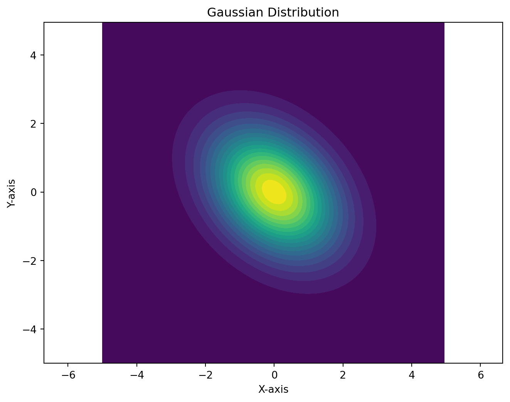
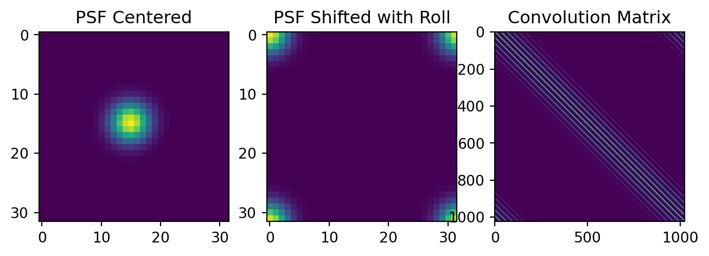
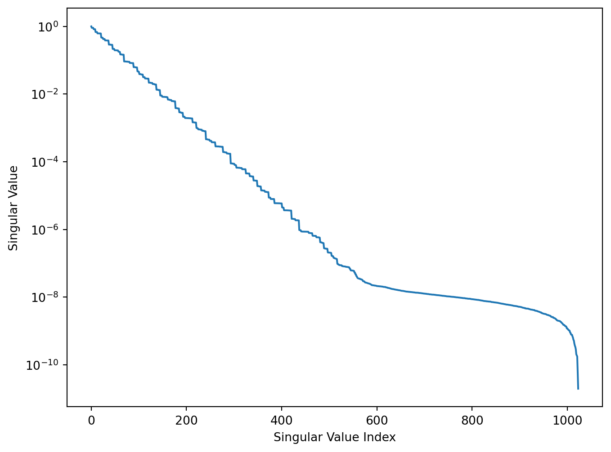
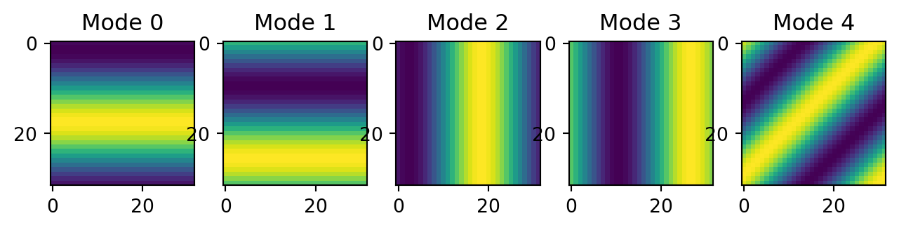
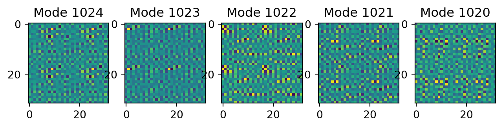
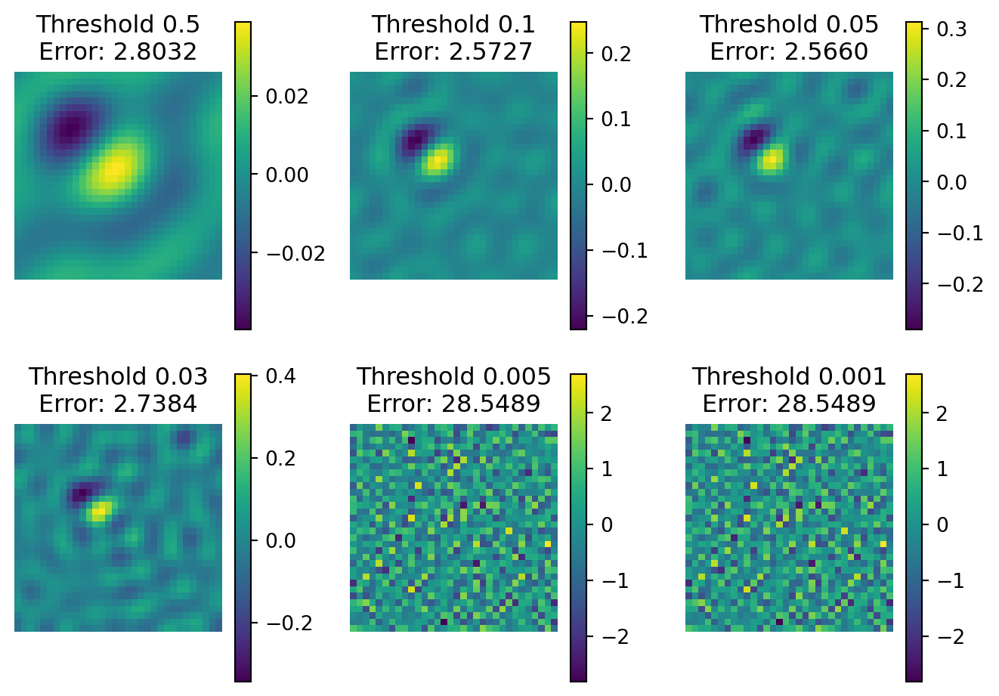

Image denoising and deblurring are important techniques in signal processing and recovery. I this coding exercise, we will explore the application of least squares, SVD, and the pseudoinverse to denoise and deblur images.
Author
Simon Ghyselincks
Published
September 15, 2024
Image Denoising and Deblurring
The motivation for the exercise comes from a real world problem. The Hubble space telescope when launched had a defect in its mirror. This defect caused the images to be blurred. The problem was initially addressed by using signal processing techniques to remove the aberrations from the images.
Point Spread Function
For such an image processing problem, we can consider the continuous incoming light as striking a 2D mirror that distorts the light, followed by a 2D sensor that captures the light. In this context we suppose that we have a noise kernel or a point spread function (PSF) that describes the distortion of the light at the mirror. The point spread function, being a convolution kernel, behaves as a Green’s function for the system in the continuous case:
where \(\vec{b}(x,y)\) is the blurred image data that is recovered at the sensor, \(\vec{u}(x',y')\) is the true image data, and \(\vec{G}(x,y)\) is the point spread function.
In the special case that the point spread function is \(\delta(x-x',y-y')\), then the image data is not distorted and the sensor captures the true image data. However our experiment is to consider cases where there could be even severe distortions and see how this impacts the proposition of recovering the true image data, \(\vec{u}(x',y')\) from our sensor data, \(\vec{b}(x,y)\).
Discrete PSF
The discrete analog of the continuous PSF can be more conveniently treated with we essentially flatten the the 2D mesh into a 1D vector, a common operation for signal processing. The unflattened case we have:
\[ b_{ij} = \sum_{k=1}^{n} \sum_{l=1}^{m} \Delta x \Delta y G(x_i - x_k, y_j - y_l) u_{kl} \]
where \(b\) is the blurred image data at the sensor, \(u\) is the true image data, and \(G\) is the discrete point spread function. If we flatten the 2D mesh into a 1D vector we can represent this as a 1D convolution operation: \[ \vec{b} = \vec{G} * \vec{u} \]
Since this is a convolution operation, we can process it much more quickly by leveraging the convolution theorem.
The \(\odot\) hadamard product is element-wise multiplication, the discrete analog of multiplication of two functions except over an array.
Matrix Representation of Convolution Operation
If we flatten the data down into a 1D vector then it is possible to construct a matrix operator that performs the convolution. This is a Toeplitz matrix, a matrix where each descending diagonal from left to right is constant, so that the row vectors represent a sliding window of the convolution kernel. We can flatten out the PSF and construct the matrix using it as the first row entry and then shifting the PSF to the right to fill out the rest of the rows.
Code Implementation
Show the code
import matplotlib.pyplot as pltimport matplotlib#matplotlib.use('TkAgg')import numpy as npimport torch.optimimport torchimport torch.nn as nnimport torch.nn.functional as Ffrom torch.optim import Adamimport copyimport seaborn as snsimport mathimport osimport timeimport matplotlib.pyplot as pltimport numpy as npimport torch.fft
We start off by introducing a point spread function within the torch framework. In the case we work with a parameterized gaussian kernel.
Gaussian Example
The multivariate extension of the gaussian function is given by: \[f(x) = \exp\left(-\frac{1}{2} (x-\mu)^T \Sigma^{-1} (x-\mu)\right)\]
where \(\mu\) is the mean vector, \(x\) is a position vector, and \(\Sigma\) is the covariance matrix. The covariance matrix essentially encodes the eigenvectors and corresponding postive eigenvalues of the matrix. The covariance matrix is always symmetric and positive definite. In the context of the code, we are using \(C\) as the inverse of the covariance matrix and working with a \(\mu=0\) value.
Show the code
from scipy.ndimage import convolvedef multivariate_gaussian(pos, mean, cov):"""Return the multivariate Gaussian distribution on array pos without using einsum notation.""" n = mean.shape[0] diff = pos - mean cov_inv = np.linalg.inv(cov)# Compute the exponent diff_cov_inv = diff @ cov_inv exponent =-0.5* np.sum(diff * diff_cov_inv, axis=-1)# Compute the normalization factor norm_factor = np.sqrt((2* np.pi) ** n * np.linalg.det(cov))# Return the Gaussian functionreturn np.exp(exponent) / norm_factor# Define the grid limits and resolutionX, Y = np.mgrid[-5:5:0.05, -5:5:0.05]pos = np.dstack((X, Y))# Parametersmean = np.array([0, 0])eigenvalues = np.array([1, 2]) # Example eigenvaluesprincipal_axis = np.array([1, 1]) # Example principal axis# Normalize the principal axisprincipal_axis = principal_axis / np.linalg.norm(principal_axis)# Create the covariance matrixD = np.diag(eigenvalues)orthogonal_complement = np.array([-principal_axis[1], principal_axis[0]])Q = np.column_stack((principal_axis, orthogonal_complement))cov = Q @ D @ Q.T# Compute the Gaussian function over the gridZ = multivariate_gaussian(pos, mean, cov)# Define the Sobel operators for x and y derivativesKdx = np.array([[-1, 0, 1], [-2, 0, 2], [-1, 0, 1]]) /4.0Kdy = np.array([[-1, -2, -1], [0, 0, 0], [1, 2, 1]]) /4.0# Apply the Sobel filters to compute the derivativesZdx = convolve(Z, Kdx, mode='constant', cval=0.0)Zdy = convolve(Z, Kdy, mode='constant', cval=0.0)plt.contourf(X, Y, Z, levels=20, cmap='viridis')plt.title('Gaussian Distribution')plt.xlabel('X-axis')plt.ylabel('Y-axis')plt.axis('equal')plt.savefig('figure.png', dpi=300, bbox_inches='tight')# Plot the Gaussian and its derivativesplt.figure(figsize=(7.5, 2.5))# Plot the Gaussianplt.subplot(1, 3, 1)plt.contourf(X, Y, Z, levels=20, cmap='viridis')plt.title('Gaussian Distribution')plt.xlabel('X-axis')plt.ylabel('Y-axis')plt.axis('equal')# Plot the derivative in xplt.subplot(1, 3, 2)plt.contourf(X, Y, Zdx, levels=20, cmap='RdBu')plt.title('Derivative in X (Sobel Filter)')plt.xlabel('X-axis')plt.ylabel('Y-axis')plt.axis('equal')# Plot the derivative in yplt.subplot(1, 3, 3)plt.contourf(X, Y, Zdy, levels=20, cmap='RdBu')plt.title('Derivative in Y (Sobel Filter)')plt.xlabel('X-axis')plt.ylabel('Y-axis')plt.axis('equal')plt.tight_layout()plt.show()

Multivariate Gaussian and its Derivatives
Extending to Combination of Gaussian and Derivative
We can compute the MV gaussian from the inverse covariance matrix \(C\) with a mean of \(\mu=0\) along with a dimensional scaling metric \(t\). For the purposes of forming interesting and varied PSFs, we include the linear combination of the gaussian and a Sobel operator to axpproximate the derivative of the gaussian.
These operators act like edge detection or derivatives. The \(n_0\), \(n_x\), and \(n_y\) parameters in the code are used to scale the gaussian and the derivatives.
Show the code
class gaussianConv(nn.Module):""" A PyTorch module that applies a Gaussian convolution to an input image using a parameterized Gaussian Point Spread Function (PSF). The PSF is derived from a covariance matrix and the derivatives of the Gaussian are computed for edge detection. Args: C (torch.Tensor): Inverse of covariance matrix used to define the shape of the Gaussian. t (float, optional): Scaling factor for the Gaussian, default is np.exp(5). n0 (float, optional): Scaling factor for the original PSF, default is 1. nx (float, optional): Scaling factor for the derivative along the x-axis, default is 1. ny (float, optional): Scaling factor for the derivative along the y-axis, default is 1. """def__init__(self, C, t=np.exp(5), n0=1, nx=1, ny=1):super(gaussianConv, self).__init__()self.C = Cself.t = tself.n0 = n0self.nx = nxself.ny = nydef forward(self, image):""" Apply the Gaussian convolution and derivatives to an input image. This method performs convolution of the input image with a Gaussian Point Spread Function (PSF) that includes the original Gaussian and its derivatives along x and y axes. The convolution is performed using the Fourier Transform for efficiency. Args: image (torch.Tensor): Input image tensor of shape (Batch, Channels, Height, Width). Returns: torch.Tensor: The convolved image of the same shape as the input. """# Generate the PSF and calculate the center shift required for alignment P, center =self.psfGauss(image.shape[-1], image.device)# Shift the PSF so that its center aligns with the origin (top-left corner) P_shifted = torch.roll(P, shifts=center, dims=[2, 3])# Compute the Fourier Transform of the shifted PSF S = torch.fft.fft2(P_shifted)# Compute the Fourier Transform of the input image I_fft = torch.fft.fft2(image)# Multiply the Fourier Transforms element-wise (convolution theorem with Hadamard product) B_fft = S * I_fft# Compute the inverse Fourier Transform to get back to the spatial domain B = torch.real(torch.fft.ifft2(B_fft))# Return the convolved imagereturn Bdef psfGauss(self, dim, device='cpu'):""" Generate the Gaussian PSF and its derivatives. Args: dim (int): Dimension size (assumes square dimensions). device (str, optional): Device to create tensors on, default is 'cpu'. Returns: tuple: - PSF (torch.Tensor): The combined PSF including derivatives. - center (list): Shifts required to align the PSF with the origin. """# Define the size of the PSF kernel (assumed to be square) m = dim n = dim# Create a meshgrid of (X, Y) coordinates x = torch.arange(-m //2+1, m //2+1, device=device) y = torch.arange(-n //2+1, n //2+1, device=device) X, Y = torch.meshgrid(x, y, indexing='ij') X = X.unsqueeze(0).unsqueeze(0) # Shape: (1, 1, m, n) Y = Y.unsqueeze(0).unsqueeze(0) # Shape: (1, 1, m, n)# Extract elements from the covariance matrix# Assuming self.C is a 2x2 tensor cx, cy, cxy =self.C[0, 0], self.C[1, 1], self.C[0, 1]# Compute the Gaussian PSF using the meshgrid and covariance elements PSF = torch.exp(-self.t * (cx * X **2+ cy * Y **2+2* cxy * X * Y))# Normalize the PSF so that its absolute sum is 1 PSF0 = PSF / torch.sum(PSF.abs())# Define derivative kernels (Sobel operators) for edge detection Kdx = torch.tensor([[-1, 0, 1], [-2, 0, 2], [-1, 0, 1]], dtype=PSF0.dtype, device=device) /4 Kdy = torch.tensor([[-1, -2, -1], [0, 0, 0], [1, 2, 1]], dtype=PSF0.dtype, device=device) /4# Reshape kernels to match convolution requirements Kdx = Kdx.unsqueeze(0).unsqueeze(0) # Shape: (1, 1, 3, 3) Kdy = Kdy.unsqueeze(0).unsqueeze(0) # Shape: (1, 1, 3, 3)# Convolve the PSF with the derivative kernels to obtain derivatives# Padding ensures the output size matches the input size PSFdx = F.conv2d(PSF0, Kdx, padding=1) PSFdy = F.conv2d(PSF0, Kdy, padding=1)# Combine the original PSF and its derivatives using the scaling factors PSF_combined =self.n0 * PSF0 +self.nx * PSFdx +self.ny * PSFdy# Calculate the center shift required to align the PSF with the origin center = [1- m //2, 1- n //2]# Return the combined PSF and center shiftreturn PSF_combined, center
Creating a Toy Dataset
Often in computational science we test our strategies on toy datasets, simplified data that allows for easier debugging and understanding of the problem at task. In this case, rather than use a real image, we construct a geometric image that will be easier to analyse visually for its correctness when it comes to denoising and deblurring. The dataset is also dimensioned to have a batch and color channel to follow some of the conventions for working with torch tensors, and later some machine learning frameworks. That is \(B \times C \times H \times W\), with a single sample, single channel, and a 256x256 image having dimensions \(1 \times 1 \times 256 \times 256\).
A sample toy dataset for image denoising and deblurring.
This simple image is a high and a low signal shown as two square regions, which we will try to recover after applying a point spread function to it (the forward model). The forward model is the convolution of the image with the PSF.
Back to the idea of forming a Toeplitz matrix, we first flatten the data to 1D and then recover the matrix in one of two ways. We can work in the spatial domain where the first row of the matrix is determined by the 1D convolution for the first element, then slide the row by one to form the matrix. The matrix can be quite large, since an \(n\times m\) image will have \(n \times m\) elements once flattened, requiring a \((n\times m) \times (n\times m)\) matrix. A reduction in dimension to the \(32 \times 32\) image will help with the computation.
Note that we are working with a rolling PSF which has a strange effect in that it assumes a periodic boundary condition in both \(x\) and \(y\). When it comes to convolution, there are many different ways to treat the boundary condition, such as using zero padding or mirroring the boundary. Coding this by hand is a good exercise to understand the convolution operation, but not the purpose of this exercise.
Direct Recovery of Convolution Matrix
Show the code
dim =32x = torch.zeros(1, 1, dim, dim)x[:,:, 12:14, 12:14] =1.0x[:,:, 10:12, 10:12] =-1.0Amv = gaussianConv(C, t=0.1,n0=1, nx=0.1, ny=0.1)# Flatten the image and the PSFx_flat = x.flatten()kernel, center = Amv.psfGauss(x.shape[-1]) # Get a square conv kernel # Since we are using the conv kernel as a filter operation, we use the transpose of the kernel# to fill the convolution matrix. kernel = kernel.transpose(2,3) # Roll shifts the kernel from the center of the box to the top left cornerkernel_shifted = torch.roll(kernel, shifts=center, dims=[2, 3])plt.subplot(1,3,1)plt.imshow(kernel[0,0,:,:])plt.title('PSF Centered')plt.subplot(1,3,2)plt.title('PSF Shifted with Roll')plt.imshow(kernel_shifted[0,0,:,:])# Flatten the kernelkernel_flat = kernel_shifted.flatten()# Form the convolution matrixn = x_flat.shape[0]m = kernel_flat.shape[0]A_conv = torch.zeros(n, n)for i inrange(n): A_conv[i, :] = torch.roll(kernel_flat, shifts=i, dims=[0])plt.subplot(1,3,3)plt.imshow(A_conv)plt.title('Convolution Matrix');

Forming a convolution matrix for the forward model.
Recovery Using Linearity of Operator
Since the convolution operation that is being performed is linear, one way to recover the matrix operator under this assumption is to pass through the basis vectors and recover the column vectors in this fashion:
We can see that there are some differences between the two methods but in principle they should be the same, (Not sure where the difference is coming from). The important method is actually the one which extracts the columns, as it is more generalizable. So we will continue with that.
Show the code
Amat = A_conv_lin
Least Squares Recovery with SVD and Pseudoinverse
Now that we have a matrix operator recovered we can formulate the forward problem as \(A\mathbf{x} = \mathbf{b}\) with our known \(A\) and \(\mathbf{b}\), and we want to recover \(\mathbf{x}\). To do this we use the SVD decomposition to gather the pseudo inverse. We can decide to filter out some of the singular values that are very small to improve the conditioning on the matrix as well, using a cutoff value for example.
SVD Decomposition
Show the code
U, S, V = torch.svd(Amat.to(torch.float64))b = Amv(x)
Now we make a log plot of the singular values to see how they decay, noting that we lose numerical precision around the \(10^{-6}\) mark. We can also asses what the frobenius norm of the difference between the original matrix and the reconstructed matrix is to get a sense of the error in the decomposition and reconstruction.
Show the code
plt.semilogy(S)plt.xlabel('Singular Value Index')plt.ylabel('Singular Value')loss = F.mse_loss(Amat, U @ torch.diag(S) @ V.T)print(f"The loss is {loss}")
The loss is 1.812403923995022e-34

SVD Decomposition of the Convolution Matrix.
The loss is quite small which is a good sign that the decomposition is working well within the numerical precision of the machine.
Initial Attempt at Pseudoinverse
To recover the original image data we first naively try to invert the matrix to see what happens.
Naive Pseudoinverse Recovery of the Original Image.
Wow, not even close! This is because the matrix is so ill conditioned that it is effectively low rank and not invertible. We can improve the situation by filtering out the singular values that are very small.
Pseudoinverse with Filtering
We can filter out the poor conditioning singular values and exclude those values from the inversion. To get an idea of what the values are doing, we can plot the first few singular values and the corresponding singular vector that they project onto. In the case of the SVD the most important information about the matrix is captured in the left-most vectors of the matrix \(U\).
Show the code
n=5for i inrange(n): plt.subplot(1,n,i+1) plt.imshow(U[:,i+1].reshape(x.shape[-2:])) plt.title(f'Mode {i}')
For the inverse problem, the most import singular values are conversely found in the left-most vectors of the matrix \(V\). We can also check what the right-most vectors are doing, as they will blow up in value when inverting small singular values. They are high frequency modes of the image, creating the reconstruction issues when they are subjected to error in numerical precision.
Show the code
n=5for i inrange(n): plt.subplot(1,n,i+1) plt.imshow(V[:,i+1].reshape(x.shape[-2:])) plt.title(f'Mode {i}')plt.show()for i inrange(n): plt.subplot(1,n,i+1) plt.imshow(V[:,-(i+1)].reshape(x.shape[-2:])) plt.title(f'Mode {V.shape[1]-i}')plt.show()


These modes are the most important ones, as they contain the big-picture detail without the high frequency noise. We can now filter out the singular values that are very small and invert the matrix to recover the original image.
Show the code
b_flat = b.flatten().to(torch.float64)x_flat = x.flatten().to(torch.float64)thresholds = [1e-1, 1e-3, 1e-6, 1e-7, 1e-8, 1e-10]plt.figure(figsize=(7,5)) # Adjust the figure size as neededfor idx, threshold inenumerate(thresholds):# Filter the singular values S_filtered = S.clone() S_filtered[S_filtered < threshold] =0# Compute the reciprocal of the filtered singular values S_inv = torch.zeros_like(S_filtered) non_zero_mask = S_filtered >0 S_inv[non_zero_mask] =1/ S_filtered[non_zero_mask]# Construct the pseudoinverse of Amat A_pinv = V @ torch.diag(S_inv) @ U.T# Reconstruct the original image xhat = A_pinv @ b_flat# Compute the reconstruction error error = torch.norm(xhat - x_flat, p='fro').item()# Plot the reconstructed image in the appropriate subplot plt.subplot(2, 3, idx +1) # idx + 1 because subplot indices start at 1 plt.imshow(xhat.reshape(x.shape[-2:])) plt.title(f'Threshold {threshold}\nError: {error:.4f}') plt.colorbar() plt.axis('off') # Optionally turn off axis ticks and labelsplt.tight_layout()plt.show()
Pseudoinverse Recovery of the Original Image with Filtering.
Looking at the results, around the \(10^{-7}\) mark we start to a peak level of recovery, as measured by the error in the Frobenius norm of the reconstruction. But what happens when we add noise to the data signal?
Adding Noise to the Signal
Now we add some noise to the signal and try least squares again for the direct solution
Pseudoinverse Recovery of the Original Image with Noise.
The reconstruction is not very good, the noise has been amplifed all over the image. We can try the pseudoinverse method again with the noise added to the signal.
Show the code
Amat_noisy = Amat + alpha * torch.eye(Amat.shape[0])Un, Sn, Vn = torch.svd(Amat_noisy)thresholds = [.5, .1, .05, .03, .005, .001]plt.figure(figsize=(7,5)) # Adjust the figure size as neededfor idx, threshold inenumerate(thresholds):# Filter the singular values S_filtered = Sn.clone() S_filtered[S_filtered < threshold] =0# Compute the reciprocal of the filtered singular values S_inv = torch.zeros_like(S_filtered) non_zero_mask = S_filtered >0 S_inv[non_zero_mask] =1/ S_filtered[non_zero_mask]# Construct the pseudoinverse of Amat A_pinv = Vn @ torch.diag(S_inv) @ Un.T# Reconstruct the original image xhat = A_pinv @ (b_flat + noise)# Compute the reconstruction error error = torch.norm(xhat - x_flat, p='fro').item()# Plot the reconstructed image in the appropriate subplot plt.subplot(2, 3, idx +1) # idx + 1 because subplot indices start at 1 plt.imshow(xhat.reshape(x.shape[-2:])) plt.title(f'Threshold {threshold}\nError: {error:.4f}') plt.colorbar() plt.axis('off') # Optionally turn off axis ticks and labelsplt.tight_layout()plt.show()

Pseudoinverse Recovery of the Original Image with Noise.
The small addition of noise is quite significant in the recovery threshold for reconstruction. Using a higher threshold for the singular values becomes important when dealing with noise in the signal. Previously numerical precision was the main issue, but now the measurement noise is the main issue.